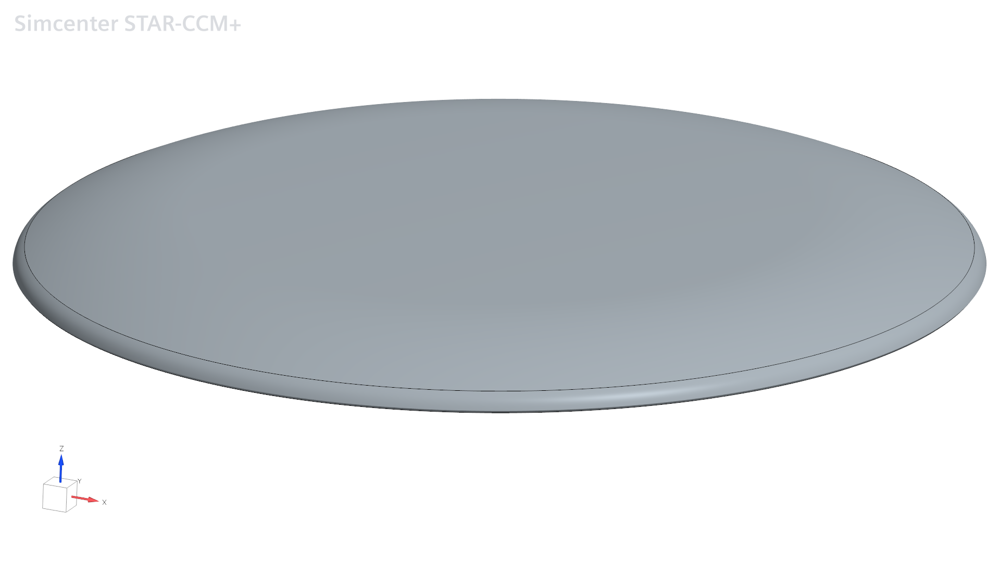
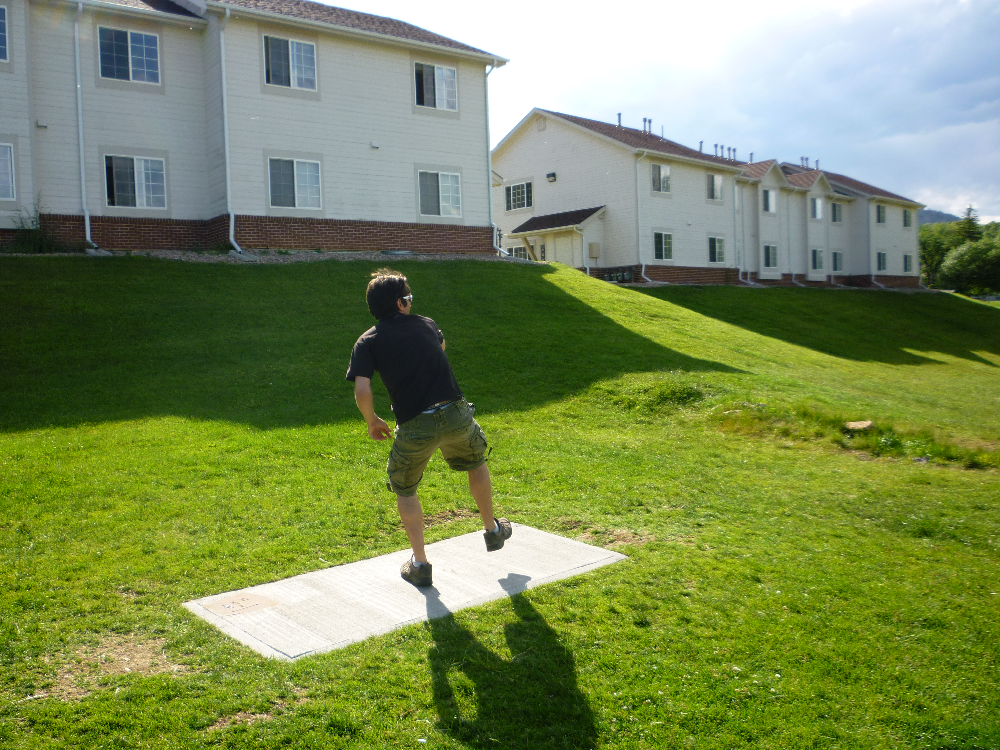
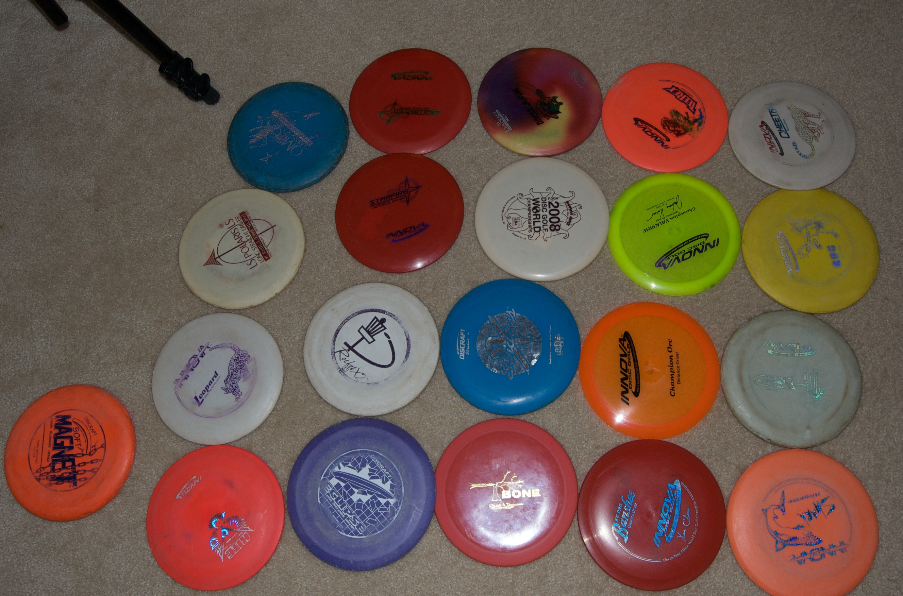
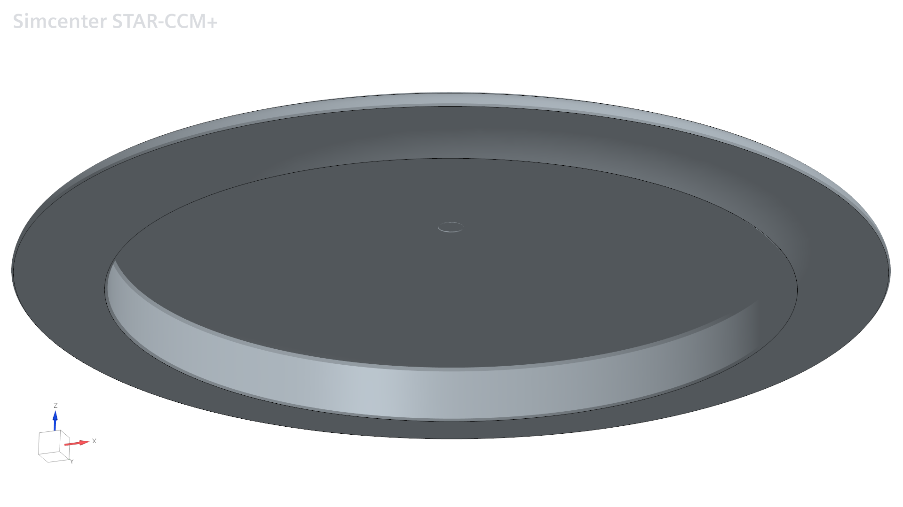
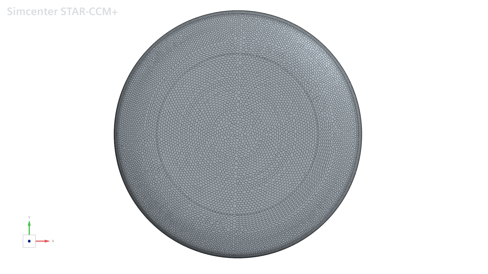
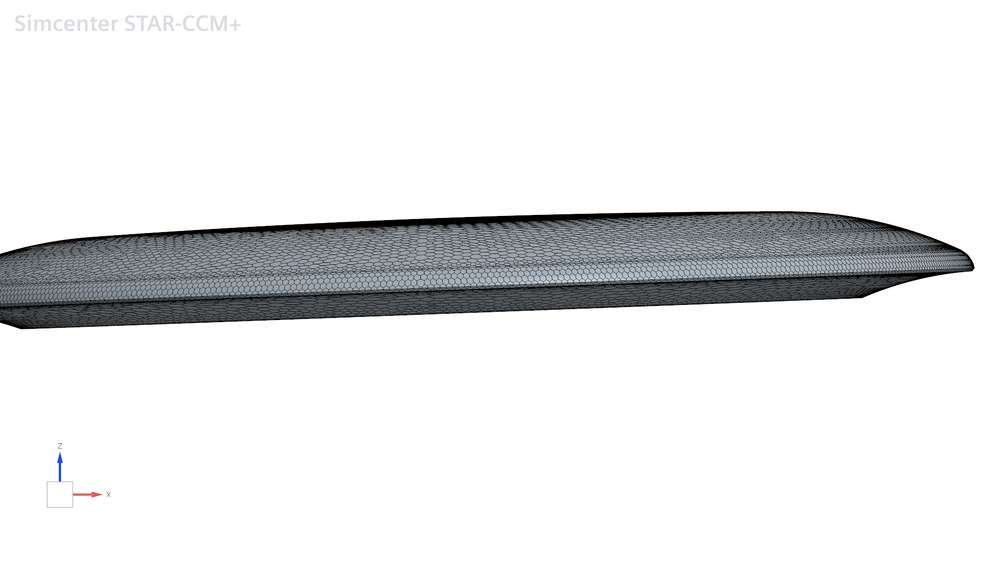
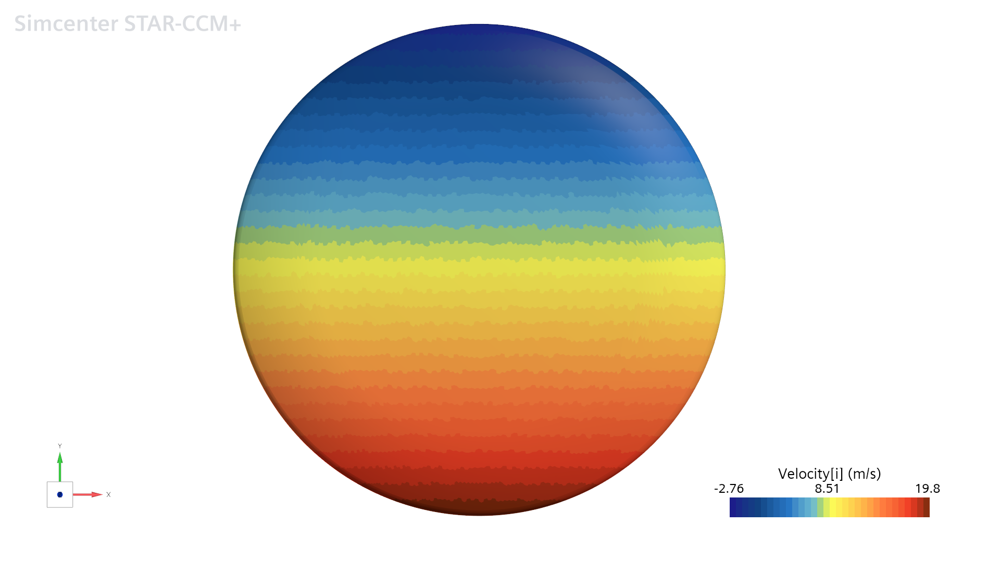
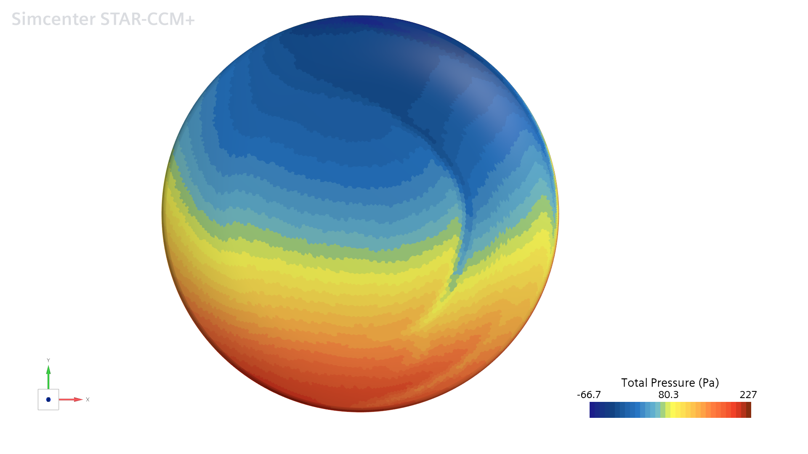
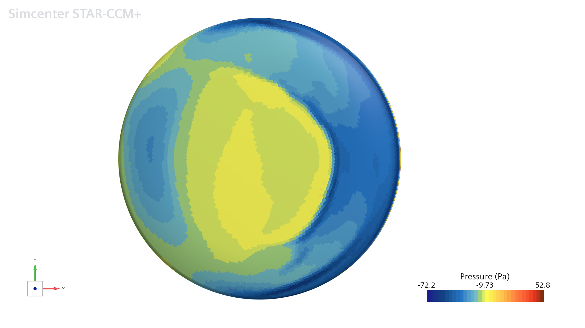
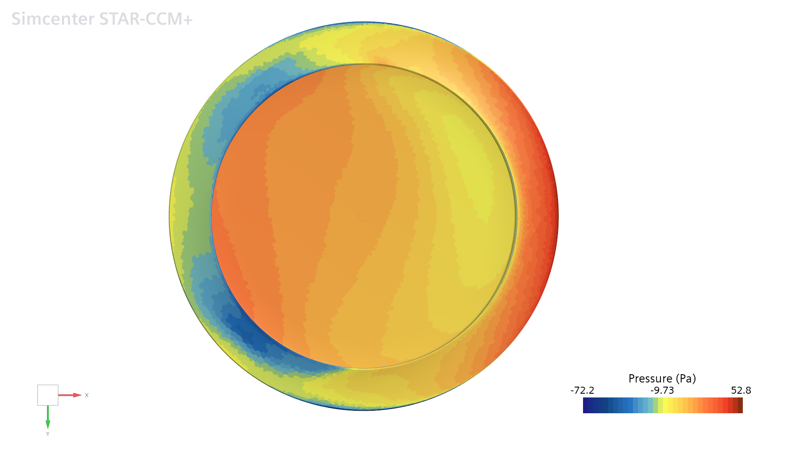

Aerodynamics · Rotating body · Study in progress
CFD simulation of a disc-golf driver.
Exploring how rotation and aerodynamic loading shape the motion of a disc-golf driver.

Disc golf
The throw and the equipment

Photo: stevehicks / Wikimedia Commons · CC BY 2.0.

Photo: Adam Bartlett / Wikimedia Commons · CC BY 2.0.
The objective
Gyroscopic motion and aerodynamics
This CFD study investigates a spinning disc-golf driver moving through air under gravity. The aim is to examine gyroscopic effects on its motion alongside the pressure and velocity fields around the disc.
The geometry represents a driver of the type used in competitive disc golf. A mass of 100 g is assigned for this simulation. The study focuses on how aerodynamic moments interact with the disc’s rotation, rather than treating its orientation as an unchanging part of the flow problem.
01 — Initial conditions
Initial velocities, mass and orientation
Initial disc inclination: 3°. Fluid: initially still air at 20 °C. The disc translates and rotates through the domain under gravity and aerodynamic loading. These velocities describe the initial condition, not prescribed constant values throughout the flight.

Rotation and aerodynamic moments
Aerodynamic moments change the disc’s angular momentum. For a spinning disc, this can change the direction of its rotation axis, producing gyroscopic behaviour such as precession. The resulting orientation also changes how the disc meets the airflow.
The surface fields below provide a first view of the rotating disc. Comparing them with the evolution of position and orientation will help connect aerodynamic loading to the flight trajectory.
02 — Geometry & mesh
Disc geometry and overset mesh
Moving disc in initially still air
An overset mesh allows a moving mesh region around the disc to overlap the background mesh, exchanging flow information between the regions. The disc translates and rotates through initially stationary air, generating the surrounding flow and wake.
This approach allows its position, orientation and aerodynamic loading to be evaluated throughout the simulated trajectory.
The surface mesh follows the curved disc and its rim. These views document the geometry discretization; assessment of the near-wall volume mesh and mesh sensitivity is also needed to evaluate the quality of the aerodynamic predictions.


03 — Rotation & lateral motion
X velocity and total pressure
The disc advances along +X and rotates counterclockwise when viewed from +Z. Rotation increases the surface X velocity on the right side of the disc (−Y) and reduces it on the left (+Y). In these upper views, +X points to the right of the image and +Y points upwards.
X velocity — laboratory frame

Total pressure — upper surface

Rotation, pressure and lateral displacement
The two views show a similar asymmetric pattern associated with the rotating surface. Total pressure includes both static pressure and a kinetic contribution, pt ≈ p + ½ρ|u|². Here, the higher-velocity side also has higher total pressure.
The familiar wing analogy — faster flow associated with lower pressure — concerns static pressure, under Bernoulli’s assumptions and at equal total pressure. It cannot be inferred directly from a laboratory-frame wall-velocity map and a total-pressure map.
A slight translation towards +Y, to the left of the initial direction of travel, is observed in the simulation. Rotation-related aerodynamic asymmetry is a possible contributor to this drift; confirming that connection requires the integrated lateral force and the disc’s changing orientation. The comparison above illustrates the asymmetry, rather than demonstrating a lateral suction force.
04 — Static pressure & lift
Pressure above and below the disc
Static pressure — upper surface

Static pressure — underside

A pressure difference that supports flight
The static-pressure views show predominantly higher pressure below the disc and suction over much of its upper surface. This pressure difference contributes an aerodynamic force from the underside towards the upper side, with a lift component that helps support the disc against gravity, as on an aircraft wing.
Lift acts perpendicular to the relative airflow: it changes the flight path and helps sustain flight, rather than directly increasing the forward speed. Forward motion comes from the initial throw, while aerodynamic drag opposes the motion through the air.
Pressure and velocity: Bernoulli’s equation — NASA ↗Flight behaviour
Spin and release orientation
For a disc-golf player, spin and release angle influence how the disc maintains or changes its orientation during flight. Together with the disc geometry and launch speed, they affect the resulting trajectory. This simulation explores those coupled effects; a counterclockwise spin alone does not imply that every throw will curve to the left.